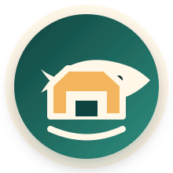
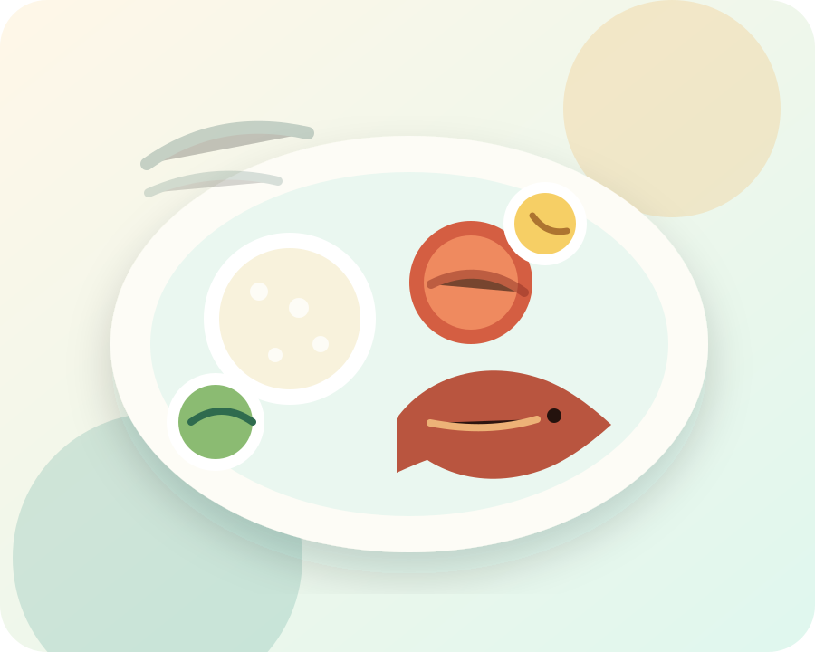
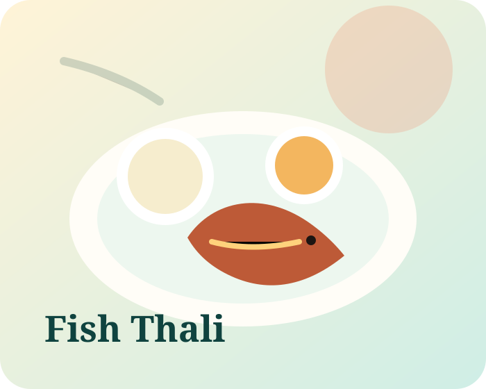
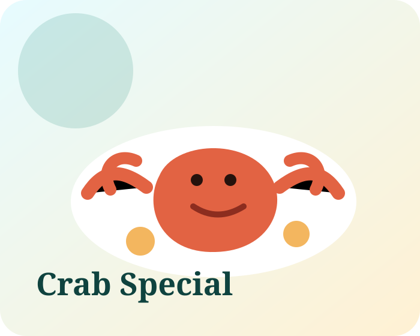
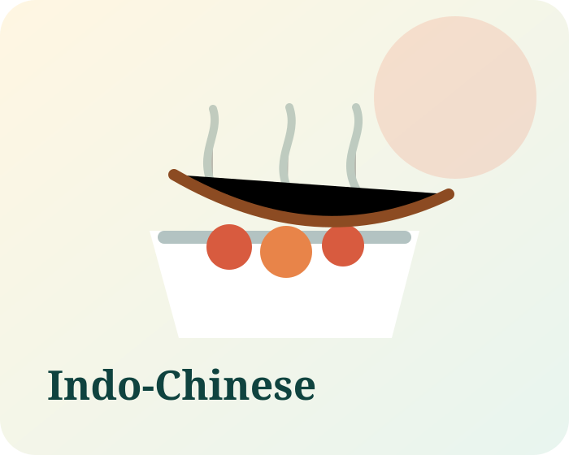
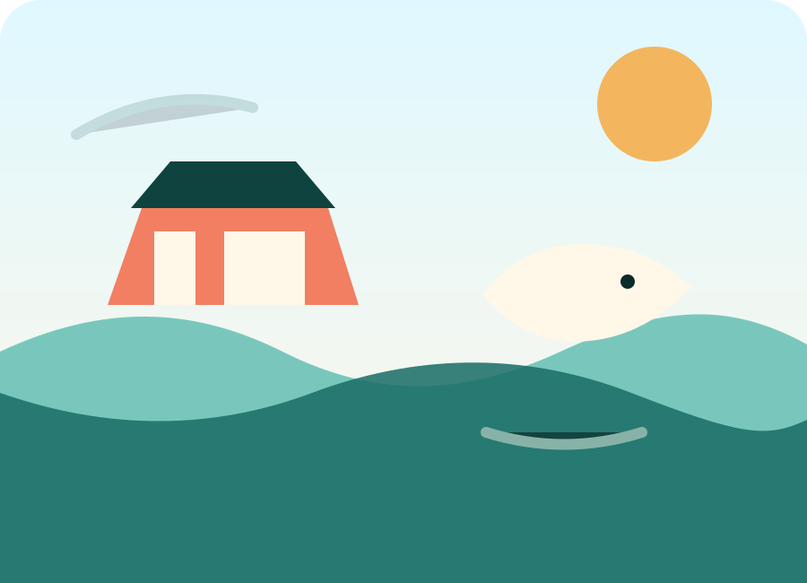

Neugi Nagar, Panaji
For the quick, comforting, family-kitchen meal: fish thalis, mild curries, fried seafood, and familiar Goan flavours.

The Fish House Goan Seafood • Panaji & RibandarFamily-run Goan coastal kitchen
Choose the homely thali house in Neugi Nagar or settle into the Ribandar riverside branch for seafood, drinks, and a breezy evening by the water.

Today’s choice
Ask for Kingfish, Prawns or Chonak thali availability.
Two moods. One Fish House.
For the quick, comforting, family-kitchen meal: fish thalis, mild curries, fried seafood, and familiar Goan flavours.
For relaxed groups, drinks, seafood boils, whole crabs, and an evening view that feels a little more unhurried.
Signature plates
Built around fresh catch, house masalas, Goan curries that do not shout over the fish, and enough Indo-Chinese favourites for the friend who always wants crispy chicken.

Kingfish, prawns, chonak and seasonal catch served with rice, curry, vegetables and fried sides.

Robust, hands-on seafood plates for a family table, best enjoyed slowly at the Ribandar branch.

Drums of Heaven, fried rice, saucy chicken plates and crunchy starters for sharing.

Our flavour
The Fish House keeps the feeling simple: good fish, patient masalas, kind service, and a table that works for both a weekday lunch and a slow family dinner.
At Panaji, it feels like a comforting thali stop tucked into the city. At Ribandar, the mood opens up with the river, drinks, seafood specials, and space to sit a little longer.
See both locationsBooking & takeaway